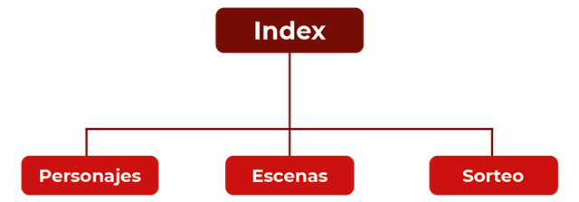
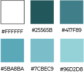

Mapa de sitio
En esta sección se presenta cómo se pensó el armado del sitio web de Cállate y Baila. A continuación se muestra el mapa de sitio, que, como se puede observar, está conformado por el Index y tres internas: Personajes, Escenas y Sorteo.

Memoria descriptiva
A continuación, se presentarán los elementos utilizados para el armado del sitio.
Elección tipográfica
Para el diseño de la página web, se eligió la familia tipográfica Montserrat, ya que es una Sans Serif y permite una clara y buena legibilidad para el usuario. Sus variables se utilizaron para generar una jerarquía de lectura en cada sección de la página.
Elección de paleta cromática
Se eligió la paleta cromática de la gama del Cyan, ya que sus colores remiten a la pantalla del teléfono y mensajes, que es lo principal dentro del capítulo. Sus cambios de saturación provocan una jerarquía de elementos en cada parte de la página.

Morfología
Los elementos gráficos utilizados son unos rectágulos para generar los rótulos de cada sección; pequeños cuadrados con terminación redondeada para colocar las redes sociales; el logo de Black Mirror y del capítulo; y dos imágenes, la principal que está de fondo y una más pequeña que representa la trama del capítulo.